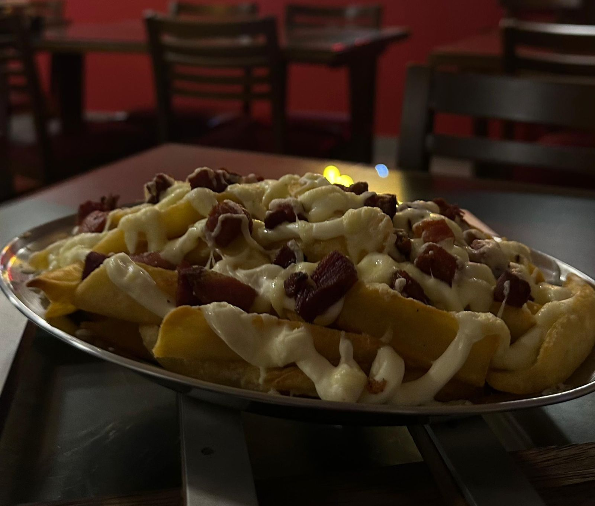
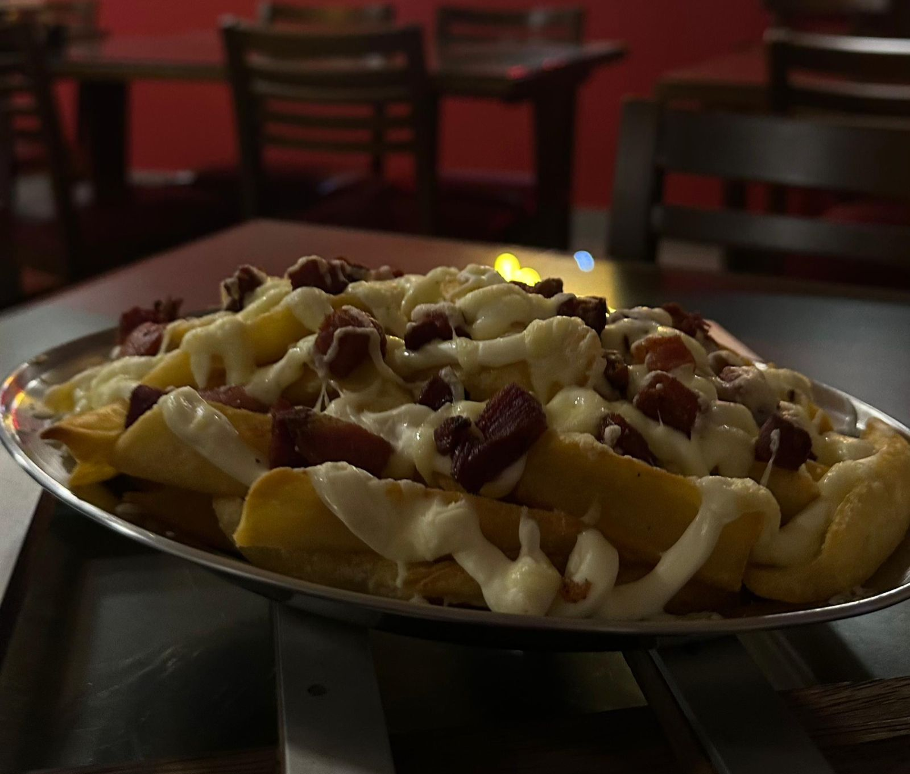

Nossa História e Filosofia
A Pizzaria Tarantella com forte presença local em Machado, oferecendo tanto atendimento presencial quanto delivery, mantendo seu padrão de qualidade e eficiência (horários típicos à noite e fins de semana).
É uma microempresa familiar, fundada em 2005, que cresceu com foco em massa caseira e atendimento acolhedor. Reconhecida por sua qualidade e ambiente familiar, mantém uma sólida reputação até hoje.

 
